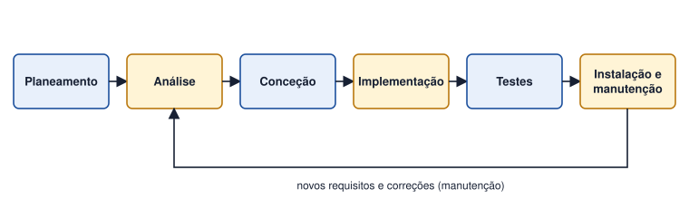

Tema 6 · Desenvolvimento de software
Ciclo de vida do software
Principais fases do desenvolvimento de sistemas
Um sistema nasce, é usado, evolui e, um dia, é substituído. O ciclo de vida do software organiza este percurso em fases, cada uma com objetivos e resultados próprios.

| Fase | Pergunta a que responde | Resultado típico |
|---|---|---|
| Planeamento | Vale a pena? Com que recursos e prazo? | Estudo de viabilidade, plano do projeto |
| Análise | O que deve o sistema fazer? | Requisitos e modelos de análise (ER, casos de uso, DFD) |
| Conceção | Como vai ser o sistema? | Arquitetura, modelo de dados, ecrãs |
| Implementação | Como se constrói? | Código e base de dados |
| Testes | Faz o que foi pedido, sem erros? | Relatório de testes |
| Instalação e manutenção | Como se coloca em uso e se mantém? | Sistema em produção, formação, correções e evoluções |
Este manual concentra-se na análise e na parte inicial da conceção: é onde se constroem os modelos que representam o sistema antes de se escrever uma linha de código.
Corrigir um erro de requisitos na fase de testes custa muito mais do que corrigi-lo na análise. Daí a importância de analisar bem.
Atividade
Ordenar e relacionar as fases do ciclo de vida com um projeto de software
Considere o projeto «aplicação de gestão da biblioteca escolar». As tarefas abaixo estão desordenadas.
- Escrever o código do módulo de empréstimos.
- Entrevistar a diretora da biblioteca.
- Formar os assistentes para usarem a aplicação.
- Desenhar o modelo Entidade-Relacionamento.
- Corrigir um erro detetado depois de a aplicação estar em uso.
- Estimar custos e prazos do projeto.
- Testar o registo de empréstimos com dados de exemplo.
- Definir a arquitetura e desenhar os ecrãs.
Ordene-as cronologicamente e associe cada uma à respetiva fase do ciclo de vida.
Ver proposta de resolução
| Ordem | Tarefa | Fase |
|---|---|---|
| 1.º | f) Estimar custos e prazos | Planeamento |
| 2.º | b) Entrevistar a diretora da biblioteca | Análise |
| 3.º | d) Desenhar o modelo Entidade-Relacionamento | Análise |
| 4.º | h) Definir a arquitetura e desenhar os ecrãs | Conceção |
| 5.º | a) Escrever o código do módulo de empréstimos | Implementação |
| 6.º | g) Testar o registo de empréstimos | Testes |
| 7.º | c) Formar os assistentes | Instalação |
| 8.º | e) Corrigir um erro detetado em uso | Manutenção |
Em resumo
- O ciclo de vida divide o desenvolvimento em fases: planeamento, análise, conceção, implementação, testes, instalação e manutenção.
- Cada fase produz resultados que alimentam a seguinte.
- Os erros detetados tarde custam mais caro; por isso a análise é decisiva.